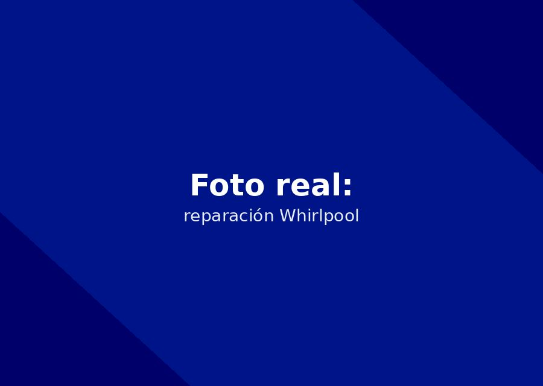

Reparamos, mantenemos e instalamos neveras y nevecones Whirlpool a domicilio en Cartagena, con experiencia específica en la tecnología Sixth Sense.


Contamos con técnicos certificados en la tecnología específica de Whirlpool (Sixth Sense y sistemas de hielo). Somos la opción confiable de servicio técnico whirlpool en Cartagena para neveras y nevecones Whirlpool, expertos en el sistema Sixth Sense y dispensadores de hielo.
Identifique el problema. Estamos preparados para diagnosticar y resolver estas fallas a domicilio.
Falla común: Display digital apagado o códigos de error intermitentes.
Síntomas: La nevera no responde a los controles o el enfriamiento es inconstante. Indica una posible falla en la tarjeta electrónica principal o el módulo Sixth Sense.
Falla común: El hielo se pega o no dispensa agua ni hielo.
Síntomas: El motor del dispensador se atasca o el agua no llega al fabricador. Con el clima de Cartagena, los motores del fabricador de hielo y los termostatos suelen fallar.
Falla común: Enfriamiento excesivo en la nevera o calentamiento en el congelador.
Síntomas: El termostato no regula la temperatura o la nevera congela los alimentos. Puede ser el termostato, el sensor de temperatura o una resistencia defectuosa.
"Mi nevera dejó de enfriar en Bocagrande. Llegaron en menos de 2 horas con repuesto original."
— Camila R. (Bocagrande)"Mantenimiento preventivo por la humedad de Cartagena, muy profesionales."
— Álvaro D. (Manga)"Cambio de termostato con garantía. Recomendados en Crespo, Cartagena."
— Luisa T. (Crespo)Sí, diagnosticamos y reprogramamos o reemplazamos el módulo electrónico Sixth Sense con repuestos originales.
Revise primero el filtro de agua. Si el problema persiste, agende una visita: puede ser la válvula de entrada o el motor del dispensador.
Cubrimos Bocagrande, Manga, El Laguito, Castillogrande, Crespo, Centro Histórico, Pie de la Popa y Turbaco. Si su zona no aparece, escríbanos para confirmar disponibilidad.
Reparamos neveras y nevecones de todas las marcas en Cartagena.
Además de la reparación, ofrecemos estos servicios independientes de la marca.
Vea el detalle de nuestra cobertura por sector de Cartagena.
Cuéntanos la falla de tu nevera Whirlpool. Te confirmamos por WhatsApp en minutos.